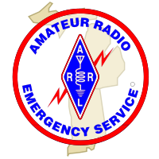

Indiana-Michigan Digital Test
After-Action Report
Functional Drill
Edition 1

Legal Notice
Copyright© 2011, Indiana and Michigan Sections of the American Radio Relay League
This document is distributed for official use only. Refer to the handling instructions in the preface before sharing this document in any way.
The ARRL Diamond and logo, the ARES logo and the ARPSC logo are registered trademarks of the American Radio Relay League in the United States and other countries.
All other trademarks are the property of their respective owners.
Abstract
On 2011-04-09 Indiana and Michigan Sections held a Functional Drill using the scenario of an Earthquake. This document details the result of that Functional Drill.